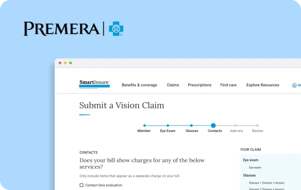
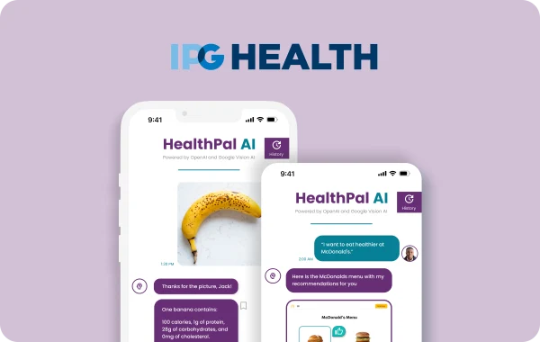
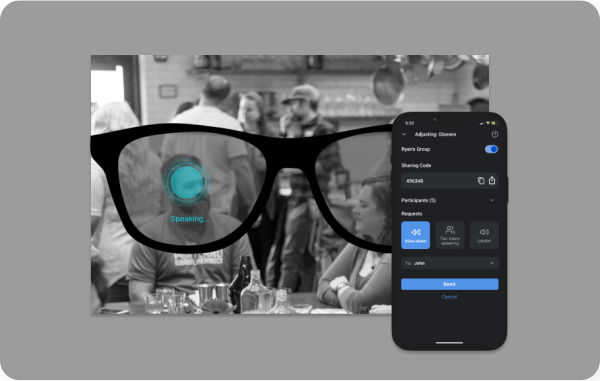
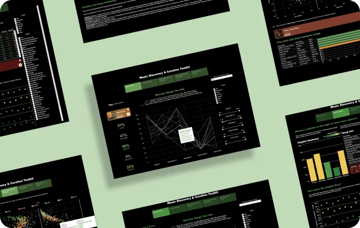

Hi :) I’m Yifan
Enjoy thinking about how people interact with design and prototyping accessible & data-driven experiences
Claim Submission Experience
Web Design | Usability Testing | DESIGN STRATEGY
Reimagining Premera Blue Cross’s customer-facing healthcare insurance claim submission website

HealthPal AI
APP Design | Information Architecture | Advertising
An AI-powered App that empowers IPG Health Client’s patients in embracing a healthier lifestyle

Accessible AR Glasses
WEARABLE Design | Inclusive Design | Entertainment
Smart AR glasses experience for the hard-of-hearing to engage in social interactions

Spotify Data Visualization
Interaction Design | VISUAL Design | Tableau
An interactive platform for party DJs to analyze music data and choose songs to play

Superhero Zip
Conversational Design | AcademiA | EDUCATION
Creating an Amazon Alexa conversational experience to help children learn social-emotional skills